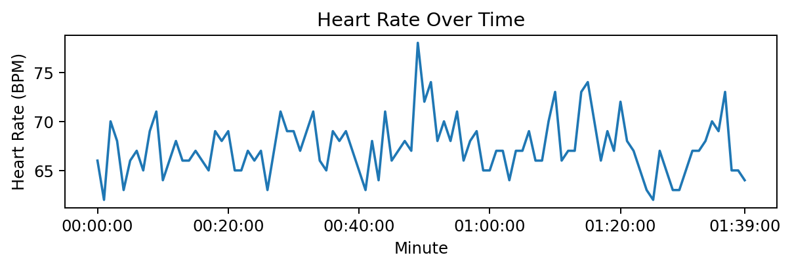

Working with the Fitbit API
First things first, all credit to Michael Galarnyk
Getting the imports right for Sphinx
[13]:
import sys, os, pathlib
import pandas as pd
from datetime import datetime
import matplotlib.pyplot as plt
import seaborn as sns
ROOT_DIR = str(pathlib.Path(os.path.realpath("__file__")).parents[2])
sys.path.insert(0, ROOT_DIR)
from hfkpy.fitbit.get_data import client
Grab the tokens
[14]:
token_path = pathlib.Path(ROOT_DIR) / "tokens.csv"
tokens = pd.read_csv(token_path)
Instantiate the Fitbit API client
[ ]:
auth2_client = client(tokens)
Intraday Fitbit data
The intraday Fitbit data can be collected down to the second interval. This data includes calories | distance | elevation | floors | steps. To get multiple days of data we can pull intraday and concatenate over our date range of interest.
[16]:
oneDate = datetime(year=2022, month=4, day=7)
oneDayData = auth2_client.intraday_time_series(
"activities/heart", oneDate, detail_level="1min"
)
str(oneDayData)[:200] + "..."
[16]:
"{'activities-heart': [{'dateTime': '2022-04-07', 'value': {'customHeartRateZones': [], 'heartRateZones': [{'caloriesOut': 2876.27486, 'max': 111, 'min': 30, 'minutes': 1405, 'name': 'Out of Range'}, {..."
View the data as a dataframe
[17]:
heart_df = pd.DataFrame(oneDayData["activities-heart-intraday"]["dataset"])
heart_df.head()
[17]:
| time | value | |
|---|---|---|
| 0 | 00:00:00 | 66 |
| 1 | 00:01:00 | 62 |
| 2 | 00:02:00 | 70 |
| 3 | 00:03:00 | 68 |
| 4 | 00:04:00 | 63 |
Visualize the data
[18]:
plot_data = heart_df.head(100)
x_ticks = [0, 20, 40, 60, 80, 99]
x_tick_labels = plot_data.iloc[x_ticks]["time"]
plt.figure(figsize=(8, 2), dpi=175)
sns.lineplot(data=heart_df.head(100), x="time", y="value")
plt.xticks(x_ticks, x_tick_labels)
plt.xlabel("Minute")
plt.ylabel("Heart Rate (BPM)")
plt.title("Heart Rate Over Time")
plt.show()
